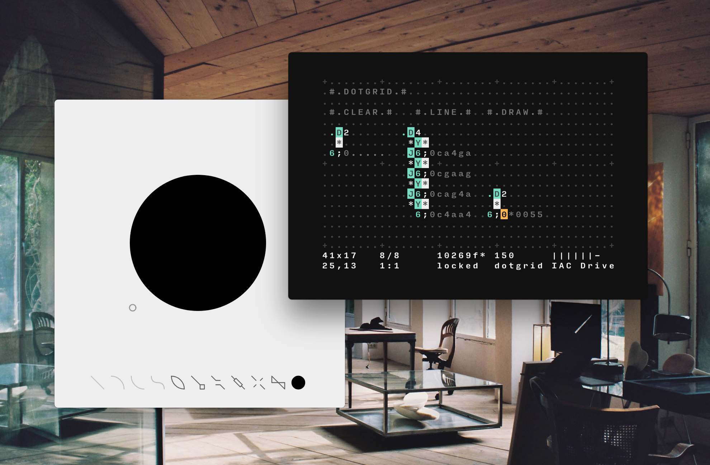
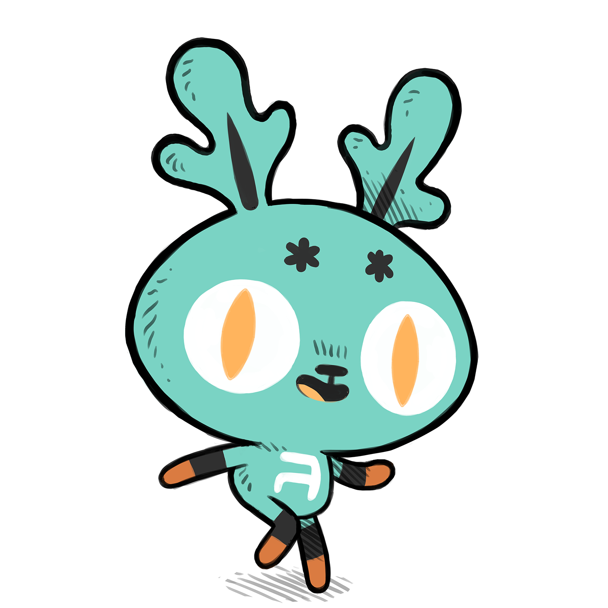
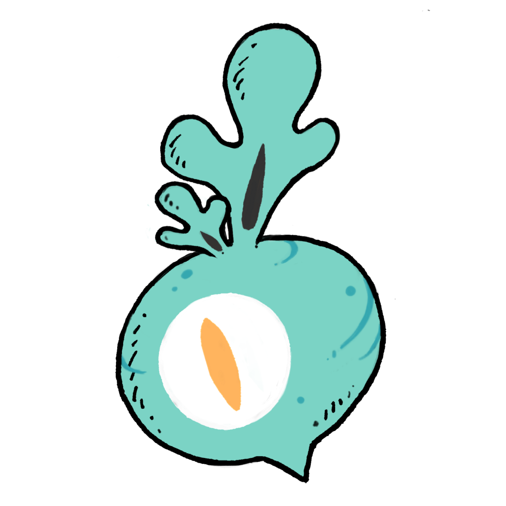

Orca is a livecoding language and virtual machine.

Orca is a two-dimensional esoteric programming language in which every letter of the alphabet is an operator, where lowercase letters operate on bang, uppercase letters operate each frame.
If you wish to learn how to use Orca, watch a tutorial, print a zine, or ask your questions in the forum, chatroom or mailing list.
Playground
This little playground allows you to try some of the examples below. It will not play sounds, or send signals out, but it's an excellent place to try Orca for the first time. Use ctrl , to speed up, ctrl . to speed down, ctrl h to toggle the guide, and ctrl arrows to drag the content of the selection.
If you'd like to use webMIDI, try this.
The Orca operations Manual
The base operators are present in every version of Orca, no matter the platform:
Aadd(a; b): Outputs sum of inputs.Bbus(a; b): Outputs difference of inputs.Cclock(rate; mod): Outputs modulo of frame.Ddelay(rate; mod): Bangs on modulo of frame.Eeast: Moves east, or bangs.Fif(a; b): Bangs if inputs are equal.Ggen(x, y; len): Writes cell at offset.Hhold: Holds south operand.Iincr(step; mod): Increments south operand.Jjumper(val): Outputs north operand.Kkat(len; in): Reads multiple variables.Lless(a, b): Outputs smallest of inputs.Mmul(a, b): Outputs product of inputs.Nnorth: Moves north, or bangs.Oread(x, y; read): Reads operand at offset.Ppush(len, key; in): Writes east operand.Qquery(x, y; len): Reads cell at offset.Rrand(a; b): Outputs random within inputs.Ssouth: Moves south, or bangs.Ttrack(key, len; in): Reads east operand.Uuclid(step; max): Bangs on Euclidean rhythm.Vvar(write; read): Reads and writes variable.Wwest: Moves west, or bangs.Xxwrite(x, y; in): Writes operand at offset.Yyumper(val): Outputs west operand.Zzlerp(rate; target): Scale south operand.*bang: Bangs neighboring cell.#comment: Holds a line.
The special operators make use of a platform's devices, here are the suggested special operators:
$self(cmd): Send a command to Orca, or load external file.:midi(ch oct note velocity*): Send a midi note.!midi cc(ch knob val): Send a midi control change.;pitch(oct note): Send pitch byte out./byte(high low): Send a raw hexadecimal byte.=play(ch oct note velocity*): Play note with built-in synth.
An introduction to basic operations in Orca.
This section will teach the basics of playing a note and a sequence of notes.
Send a midi note
D8, will send a bang, every 8th frame.:03C, will send theCnote, on the 3rd octave, to sendC#, use the lowercase3c.
D8... .:03C
Play a random note
aRG, will output a random value betweenA&G, the rightside uppercase letter indicates an uppercase output.
D8.aRG. .:03D..
Make a melody
04TCAFE, will create a track of 4 notes, and output its first value.
D814TCAFE .:03A....
Play the melody
8C4, will count from0to3, at 1/8th speed.
.8C4..... D804TCAFE .:03C....
Play every second note
2I6, will increment to6at a rate of2.
.2I6....... D646TCAFEDG .:03D......
Play a note with an offset
1AC, will add1toC, to outputD. To getD#, use the lowercased, like1Ac.
D8.1AC. .:03D..
Play a sequence back and forth
- The combination of the output of
C6intoB3will bounce a value between 0 and 3 over 6 frames.
4C6...... .4B3..... D414TCAFE .:03A....
Play a note at a specific interval
.I4, will increment to4, at a rate of1..F2, will bang only if leftside input is equal to2.
I4..... 3F2.1AC ..:03D.
Play a note at a specific frame
aCa, will count to 10, at 1/10th of the speed..Ca, will count to 10, at normal speed..f5, will bang every 65th frame.
.aCa. ..6F4 Ca... .Y.f5
Hold a moving operator
E, will travel further eastward, every frame.H, will stop aEfrom moving.
..H E..
Read an operator at position
22O, will get the operatorEat the offset2,2.
22O... ..E..H .....E
Write an operator at position
22X, will output the operatorEat the offset2,2.
22XE. ..... ..... ....E
Animate a projector
B8, will bounce between0and8.
C........... .B4......... .1XE........ ........:03C ........:03D ........:03E ........:03F ........:03G
Write a variable
aV5, will store5in the variablea.
aV5
Read a variable
Va, will output the value of the variablea. Notice how variables always have to be written above where they are read.
.....Va ....... aV5..Va .....5. ....... aV6..Va .....6.
Read 3 variables
3Kion, will output the values ofi,o&n, side-by-side.
iV0.oV3.nVC ........... 3Kion...... .:03C......
Count to 100
aCa, each increment takes 10 frames.
aCa.Ca .2Y22.
Carry a value horizontally and vertically
Y, will output the west input, eastward.J, will output the north input, southward.
3.. J.. 3Y3
Carry a bang
- This method will allow you to bring bangs into tight spots.
D43Ka... .Y.:03C.
Delay a bang
- This method will delay a bang for one frame for each
22O.
22O....... ...22O.... .....*.3U8
I hope this workshop has been enlightening, if you have questions or suggestions, please visit the forum, or the chatroom. Enjoy!
Base 36 Table
Orca operates on a base of 36 increments. Operators using numeric values will typically also operate on letters and convert them into values as per the following table. For instance Do will bang every 24th frame.
| 0 | 1 | 2 | 3 | 4 | 5 | 6 | 7 | 8 | 9 | A | B |
|---|---|---|---|---|---|---|---|---|---|---|---|
| 0 | 1 | 2 | 3 | 4 | 5 | 6 | 7 | 8 | 9 | 10 | 11 |
| C | D | E | F | G | H | I | J | K | L | M | N |
| 12 | 13 | 14 | 15 | 16 | 17 | 18 | 19 | 20 | 21 | 22 | 23 |
| O | P | Q | R | S | T | U | V | W | X | Y | Z |
| 24 | 25 | 26 | 27 | 28 | 29 | 30 | 31 | 32 | 33 | 34 | 35 |
Transpose Table
The midi operator interprets any letter above the chromatic scale as a transpose value, for instance 3H, is equivalent to 4A.
| 0 | 1 | 2 | 3 | 4 | 5 | 6 | 7 | 8 | 9 | A | B |
|---|---|---|---|---|---|---|---|---|---|---|---|
| _ | _ | _ | _ | _ | _ | _ | _ | _ | _ | A0 | B0 |
| C | D | E | F | G | H | I | J | K | L | M | N |
| C0 | D0 | E0 | F0 | G0 | A0 | B0 | C1 | D1 | E1 | F1 | G1 |
| O | P | Q | R | S | T | U | V | W | X | Y | Z |
| A1 | B1 | C2 | D2 | E2 | F2 | G2 | A2 | B2 | C3 | D3 | E3 |
Golf
Here are a few interesting snippets to achieve various arithmetic operations.
1X.. | Modulo Will output the modulo of 6 % 4. |
cA1. | Uppercase Will output uppercase C. |
H... | Lowercase Will output lowercase C. |
0A1. | OR Or logic gate with numeric input |
0B1. | XOR Xor logic gate with numeric input |
0B1. | XNOR Xnor logic gate with numeric input |
0M1. | AND And logic gate with numeric input |
0M1. | NAND Nand logic gate with numeric input |

- Read Manual
- Download Orca
- Graphical version, Uxntal.
- Terminal version, ANSI C.
- Browser version, Javascript
- Norns version, Lua
Orca is a wildly unique visual programming tool. It's also an inky black and seafoam green alphabet soup, pulsating to some species of broody electronic industrial throb.Ivan Reese, The Future Of Coding
15M05— Orca Uxn Release14C11— Orca Workshop Mila, Montreal13V03— Orca Workshop Foolab, Montreal13J12— Orca Workshop Algomech, Sheffield12W13— Orca Release
incoming: alicef azolla orca zine austria roms marabu pilot enfer graphical norns studio events 2025 2024 2022 2021 goals merveilles